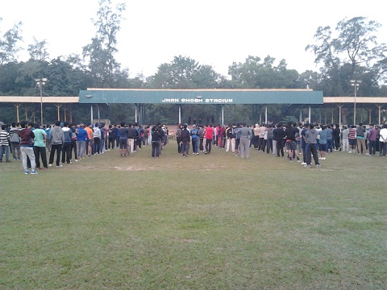

Recent Articles
Know Your Professor: Joy Sen
Posted on May 8, 2017
In the next article of the series 'Know Your Professor',
we would like to introduce you with one of the most popular professors of the institute,
Professor Joy Sen. Currently the Head of Department, he has been serving as a professor in the Department
of Architecture & Regional Planning in the Ranbir and Chitra Gupta School of Infrastructure
Design and Management for 19 years.
Read More..

NSO H&F and its Relevance
Posted on April 18, 2017
Alarm at 5, rushing to find the cycle keys and reaching the stadium
panting but oops… you will not be given any attendance because you are late”,
going to room crying upon the efforts to make a night-out solely for the attendance and finally
failing for the 7th time. Students enrolled in NSO H&F must be aware of these incidents.
The question arises here - Is it really worth?
Read More..
There's more than meets the eye
Posted on April 15, 2017
The General Championships have always been about one’s attachment
to one’s own hall, generally termed as “Hall Tempo”. These events must have been
introduced with an aim to foster the all-round development of the students.
Read More..
Know Your Professor: Suman Chakraborty
Posted on April 13, 2017
Prof. Suman Chakraborty was a student of St. Lawrence High School,
Kolkata. In his student life, he always scored good marks in the examinations
but was not able to make up to the top rank in the class. He indulged himself in a
lot of co-curricular activities. Coachings and tuitions were not prominent in those days.
Read More..
GYWS: A Big Step Towards Transformation
Posted on April 10, 2017
" The most beautiful thing in this world is to see children smile,
and the next big thing is to know that you are the reason behind that smile."
Gopali Youth Welfare Society(GYWS) is a registered NGO run by the professors and
students of IIT Kharagpur. Formed with the vision of bringing betterment to our society,
GYWS aims at ensuring the socio-economic welfare of the underprivileged section of the society.
Read More..